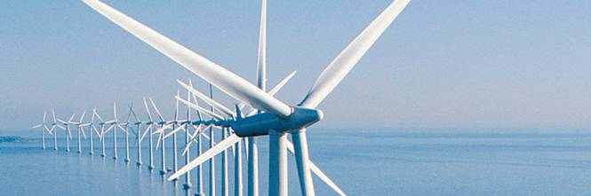

Obiettivo 7

Energia pulita e accessibile
Rendere le fonti di energie rinnovabili la risorsa primaria e fare in modo che chiunque possa usufruirne
Per raggiungere gli obiettivi gli Stati hanno deciso:
- Garantire a tutti l'accesso a servizi energetici che siano convenienti, affidabili e moderni, attraverso nuove infrastrutture e tecnologie migliori.
- Promuovere l'efficienza energetica, sviluppando più in fretta tecnologie in grado di ridurre gli sprechi di energia.
- Aumentare a livello globale l’uso di energia da fonti rinnovabili rispetto ad altre fonti energetiche.
- Lavorare insieme per la ricerca e sviluppo di risorse rinnovabili e altra energia pulita.
